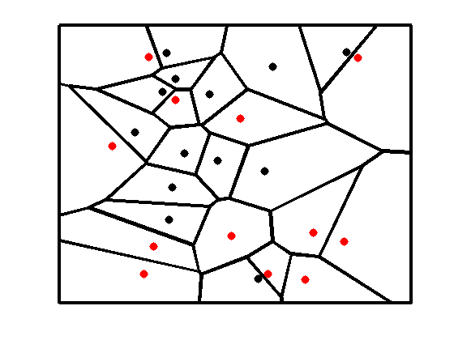

Illustration of the Voronoi tessalation induced by 1-NN
(nearest neighbor).
setSeed(5); x=rand(25,2); [vx, vy] = voronoi(x(:,1),x(:,2)); hold all; plot(vx,vy,'-k','LineWidth',3); plot(x(1:12,1),x(1:12,2),'.r','MarkerSize',25); plot(x(13:end,1),x(13:end,2),'.k','MarkerSize',25); axis([-0.1 1.1 -0.1 1.1]); set(gca,'XTick',[],'YTick',[]); box on; set(gca,'LineWidth',3) printPmtkFigure('knnVoronoi');